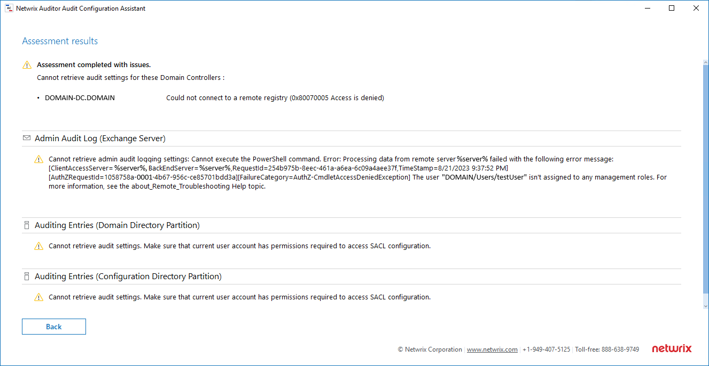

Symptom
During the assessment via Netwrix Auditor Audit Configuration Assistant you've encountered one of the following errors:
Cannot retrieve audit settings for these Domain Controllers: %DC_name% Could not connect to a remote registry (0x80070005 Access is denied)
Cannot retrieve audit settings. Make sure that current user account has permissions required to access SACL configuration.
Cannot retrieve admin audit logging settings. Cannot execute the PowerShell command. [FailureCategory=AuthZ-CmdletAccessDeniedException] The user %user% isn't assigned to any management roles.

Cause
The user is not included in any or one of the following groups: Domain Admins, Enterprise Admins, Organization Management of Records Management (in Exchange organization).
Resolution
Configure the user to be used in the Audit Configuration Assistant utility. For additional information on user permissions required for Audit Configuration Assistant utility, refer to the following article: Audit Configuration Assistant.